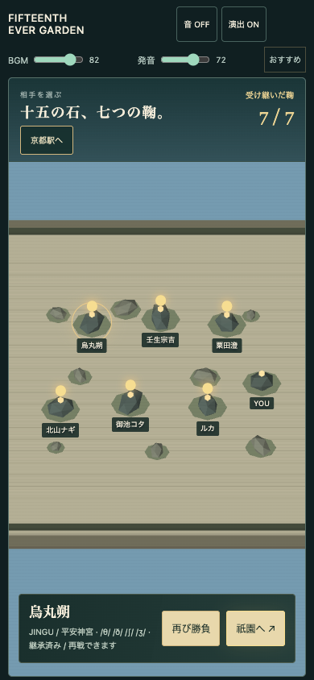
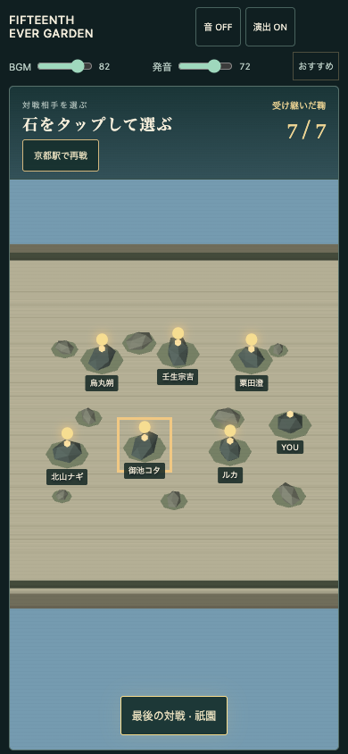
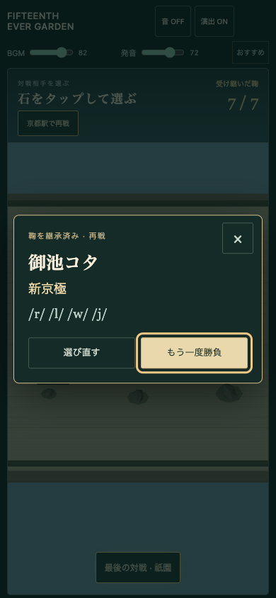
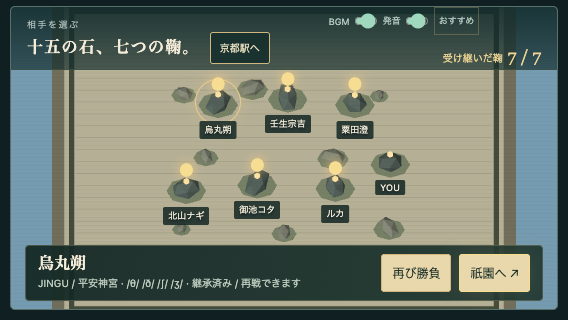
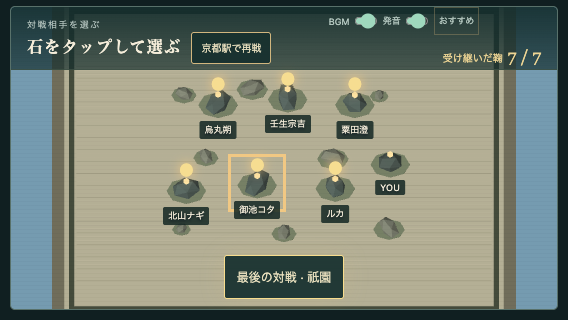
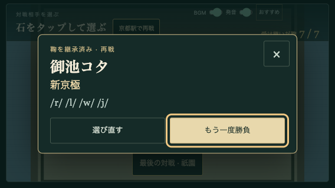

石を選ぶ → 相手と場所を確認 → 勝負
v0.37.5では石庭を開くと相手が自動選択され、画面下の欄から対戦を始めていました。v0.37.6は、石をタップして確認ポップアップを開き、そこで対戦を確定します。
初めて遊ぶ時の入口は「京都駅から始める」。初戦後は六人を自由に選べます。継承済みの相手には「再戦」、六人を倒すと「最後の対戦 · 祇園」を表示します。
変更前 · 自動選択と下部の情報欄
変更後 · 名前のある石を選ぶ
タップ後 · 相手名と場所を確認
変更前 · 横画面
変更後 · 横画面
横画面のポップアップ
石庭を試す · 通常の入口から試す · 検証記録
Mac Chromeの実WebGLで撮影。前後とも同じ六人クリア済みのセーブと画面サイズです。ポップアップの開閉、キャンセル後のフォーカス、縦横変更、京都駅／各相手への移動を確認しています。声は模擬。iPhone／iPad実機の音・タッチは未確認。公開反映は未実施です。